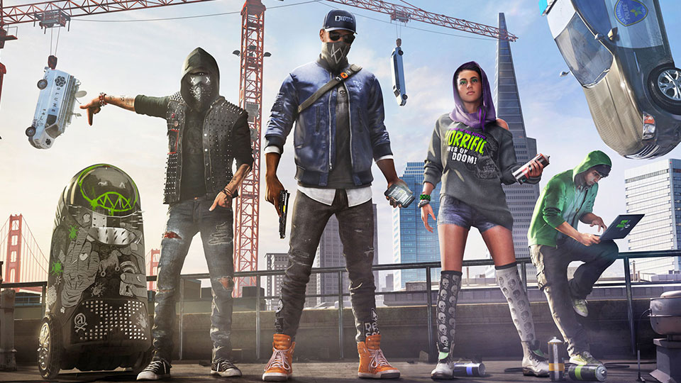
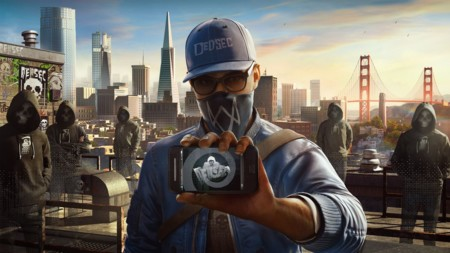

Con ‘Watch Dogs 2’ Ubisoft tiene la oportunidad de crear un sandbox mucho más completo y divertido de lo que en su día ofreció su primera entrega y, pese a las desavenencias con el juego ubicado en Chicago y protagonizado por Aiden Pearce, sería de locos no negarle a esta secuela toda nuestra atención.
Entre sus novedades nos cruzaremos con un lavado de cara a su multijugador, nuevas opciones de hackeo, la ciudad de San Francisco como escenario y una trama que parece alejarse de las películas de espías para abrazar la cultura hacktivista de obras como la serie Mr.Robot. Pero si quieres conocer en profundidad lo que ofrece ‘Watch Dogs 2’, esto es todo lo que necesitas saber sobre él.

Un poco de historia
‘Watch Dogs 2’ nos presenta a Marcus Holloway, un hacker de la bahía de San Francisco decidido a acabar de una vez por todas con ctOS 2.0, el sistema de vigilancia de la primera entrega que ahora se encuentra bajo el control de una organización criminal.
Marcus fue marcado como criminal por un error de ctOS siendo aún un niño, así que con el paso de los años ha aprendido a luchar contra el sistema para evitar que lo mismo le ocurra a otros. Con la intención de luchar contra las injusticias del sistema y sus creadores, el protagonista acabará uniéndose a DedSec, donde demostrará que está muy lejos del estilo “lobo solitario” que mostraba Aiden Pearce.
El transcurso de la historia y el origen y motivación de cada uno de los personajes que se nos presenten, los viviremos a través de la historia principal y las misiones secundarias, permitiéndonos mantener un hilo fijo de la historia que más nos interesa al marcar nuestra prioridad desde el teléfono móvil de Marcus.

Modo online
El primer ‘Watch Dogs’ tenía muy buenas ideas en el panorama multijugador, pero la carga entre usuarios para poder jugar juntos lo convertía en una experiencia algo engorrosa. Con esta segunda entrega todo será mucho más fácil, ya que los jugadores estarán siempre en un mismo servidor para hacer más accesibles las conexiones.
Moviéndonos por el escenario encontraremos a otros jugadores con los que entablar conversación con acciones simples, por ejemplo para unirnos a ellos en una misión cooperativa o entablar equipo para hacer el cabra por la ciudad.